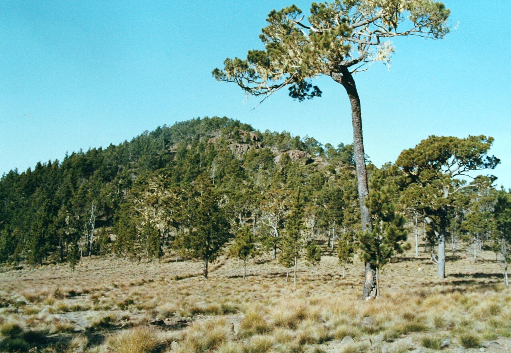
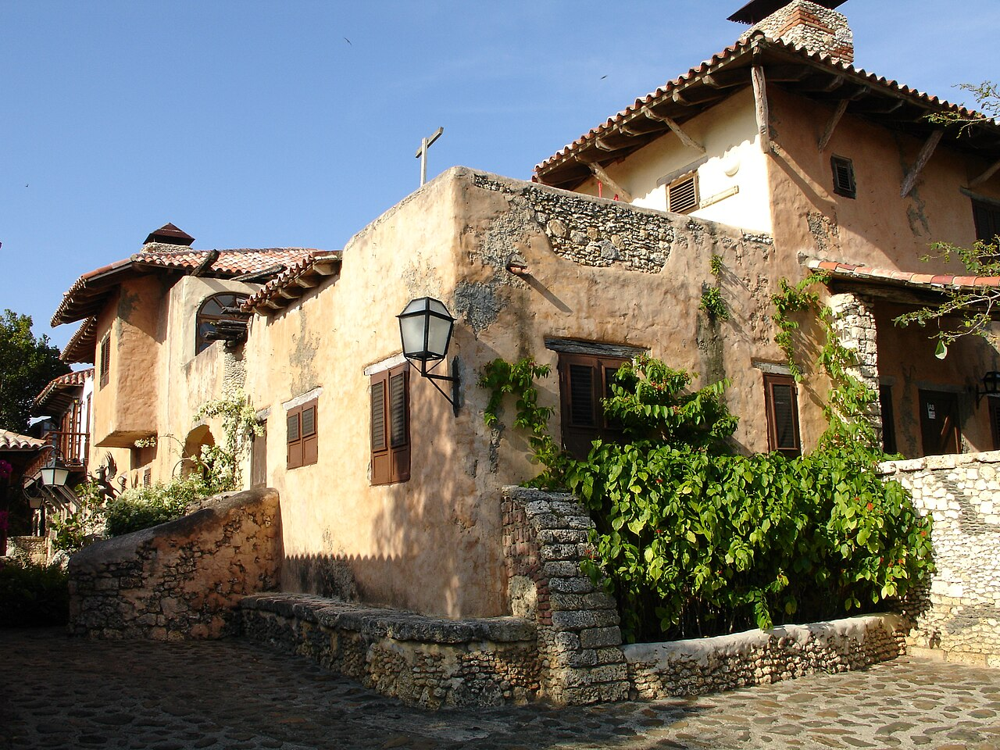
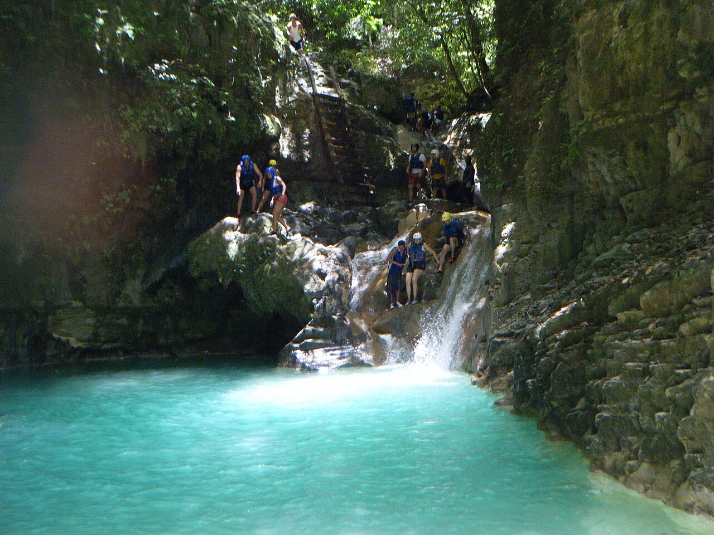

Beaches
From Punta Cana to Rincón: white sand, palm trees and turquoise water.
Welcome to Quisqueya
Beaches, mountains, the oldest European city in the Americas and a rhythm that never stops. Explore, learn and play.
Interactive map
More than 20 spots hidden on the map. Filter by theme, slide through the months of the year, or hop in the car for a trip across the country.
Tap a pin · drag to move · Ctrl + scroll to zoom
The essentials
The Dominican Republic covers two thirds of the island of Hispaniola, in the heart of the Caribbean. There is something for everyone.
From Punta Cana to Rincón: white sand, palm trees and turquoise water.
Climb the highest peak in the Caribbean or jump down 27 waterfalls.
Stone streets, fortresses and the first cathedral of the Americas.
Merengue, bachata, sancocho and a corner store on every block.

First look
Did you know?
More to discover



